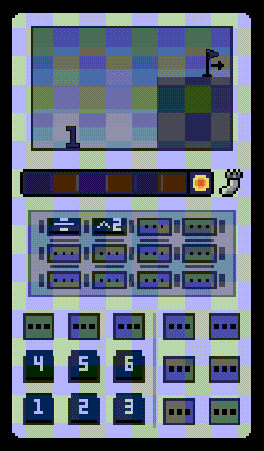
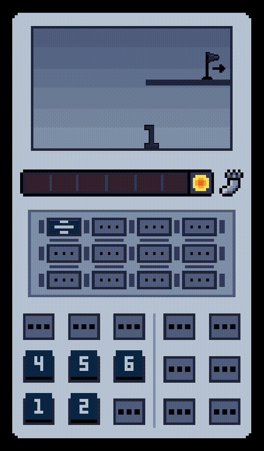
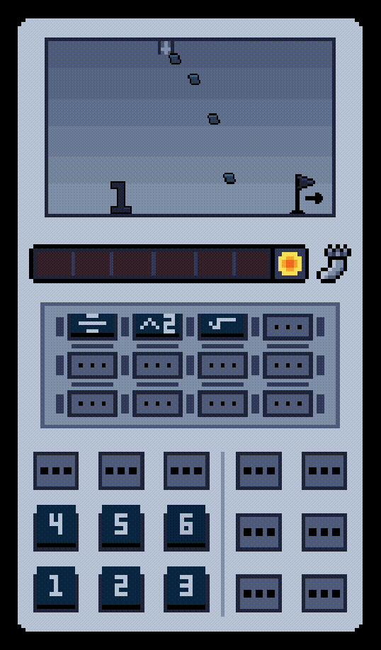

A solo project build in unity to sharpen engine and programming skills. In this 2D platformer you play as the number 1, with each passing level unlocking a new calculator functions to help 1 get through increasingly complex levels. For example:
Squared - allows 1 to place their own platforms.
Fraction - allows 1 to teleport through platforms.
Square Root - acts as a shield from falling objects.
As you progress, musical instruments layer into a custom-composed melody adding emotional build-up to the gameplay.